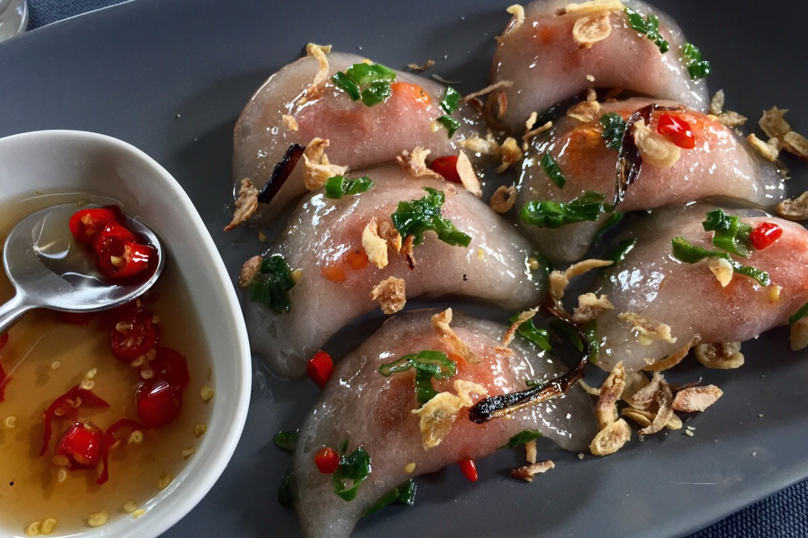

Banh Bot Loc/Vietnamese Glass Shrimp Dumplings

Description
Vietnamese Bánh Bột Lọc are a traditional tapioca starch dumpling. Often filled with shrimp and/or pork belly. Bánh bột lọc is a small, clear-looking, chewy tapioca dumplings in Vietnamese cuisine that can be eaten as appetizers or small snacks. hese are the perfect side dish for a Vietnamese feast! The unique aspect of this Vietnamese snack is the clear,
glossy dumpling wrapper. The dough is made from tapioca starch, which as a result, becomes see-through once cooked and blanched in cold water. It has a jelly-like fish appearance and chewy texture, one for the senses!
Ingredients
Dough
- ▢100g Tapioca starch
- 60ml Boiling water
Filling
- ▢5 Prawns/Shrimps, chopped in two
- ▢1 teaspoon Paprika
Dipping Sauce
- ▢1 Garlic clove, minced
- ▢1 teaspoon Sugar
- ▢1 Chilli, deseeded and finely chopped
- ▢1 tablespoon Water
- ▢1 Spring onion, finely chopped
Steps
Dough
- Add the flour and water to a bowl and combine with a spoon, you don’t want to burn yourself! If the mixture seems too dry, add some more water.
- Once the dough is cool enough, on a lightly floured surface, knead the dough until elastic. Set aside in cling film.
Filling
- In a bowl, combine the filling ingredients and mix well. Then stir fry the prawns with paprika for a few minutes.
- Remove from the heat and set aside.
Wrapping
- Form the dough into a ball and pick off small pieces (around 6-8 pieces)
- Turn the little balls into flat circular wrappers using your fingers and thumbs.
- Place a piece of prawn into the centre of the wrapper, and fold in half, into a semi-circle, and seal. Repeat this step until the dough and shrimp are finished.
Cooking
- Once all the dumplings are ready, cook in boiling water for 8 minutes. Then transfer to an ice cold bowl of water (this is was makes the dumplings translucent). Keep them in the bowl of water for 3 minutes and then drain and plate up.
Serving + Toppings
- For the dipping sauce, combine all of the associated ingredients in a small bowl
- Place the dumplings on a plate, drizzle with the sauce, and serve up!